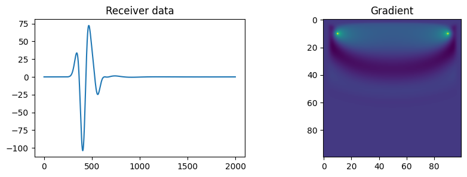
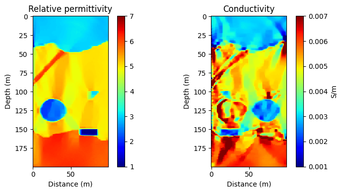

2D and 3D Maxwell modelling
Finite-difference time-domain forward modelling supports single and multiple excitation scenarios.
PyTorch × Maxwell FDTD
Differentiable 2D and 3D electromagnetic modelling for ground-penetrating radar—built for forward simulation and full-waveform inversion with PyTorch.
pip install DeepGPR
A pixel-art tour of forward modelling, exact adjoint gradients, dual-parameter FWI, and large-model memory controls.
50 seconds, with sound. The wavefields, radargram, gradients, and inversion shown in the film were computed with DeepGPR's native CPU kernel.
Build GPR simulations from familiar tensors, preserve gradient flow, and move between local CPU work and CUDA execution through one public interface.
Finite-difference time-domain forward modelling supports single and multiple excitation scenarios.
Backpropagate to relative permittivity, conductivity, initial wavefields, and source amplitudes through PyTorch autograd.
A native C CPU backend is selected for CPU tensors; CUDA libraries handle NVIDIA GPU execution where available.
Supply air and the target region. The solver adds external PML on each boundary and returns gradients at the input model size.
Choose second-, fourth-, or eighth-order spatial finite differences, with material-aware CFL validation.
Checkpointing, DDP, compact E-only or physical-region histories, lower-precision storage, automatic temporal sampling, and optional CUDA-to-CPU offload support memory-aware workflows.
Create material tensors, place a source and receiver, run DeepGPR.compute, then use standard PyTorch backpropagation.
import torch
import DeepGPR
device = torch.device("cuda" if torch.cuda.is_available() else "cpu")
eps_r = torch.full((64, 96, 1), 4.0, device=device, requires_grad=True)
sigma = torch.zeros_like(eps_r)
source = DeepGPR.wavelet.ricker(
2e8, 500, 3e-11, 5e-9, device=device
).reshape(1, 500, 1)
result = DeepGPR.compute(
device=device, dx=0.02, dt=3e-11,
source_amplitudes=source,
source_location=torch.tensor([[[16, 12, 0]]], device=device),
receiver_location=torch.tensor([[[48, 12, 0]]], device=device),
eps_r=eps_r, sigma=sigma,
)
receiver_data = result[-1]
receiver_data.square().sum().backward()The browser reads a static JSON snapshot generated by GitHub Actions. It never calls the GitHub or PyPI APIs directly.
Loading statistics snapshot…. PyPI counts represent package file downloads, not unique users or verified installations. The cumulative value is rebuilt from persistent daily history and excludes known mirrors; when history does not reach the first release, it is shown as a tracked lower bound.
These figures are copied without modification from the DeepGPR repository and correspond to the documented forward-modelling and 2D FWI examples.

Receiver data and the material gradient from the README's small modelling test.

Repository-provided inverted relative-permittivity and conductivity models.
Python 3.8 or newer is required. Choose a PyTorch build appropriate for CPU or CUDA execution.
pip install DeepGPR
The repository asks users to cite: Liu, Lei; Song, Chao; He, Liangsheng; Wang, Silin; Feng, Xuan; and Liu, Cai. “Fast ground penetrating radar dual-parameter full waveform inversion method accelerated by hybrid compilation of CUDA kernel function and PyTorch.” Computers & Geosciences, 2026, 106101. Citation details →